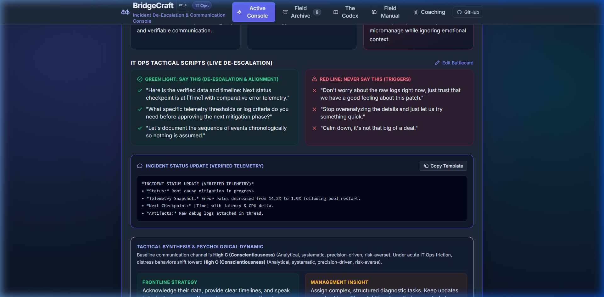
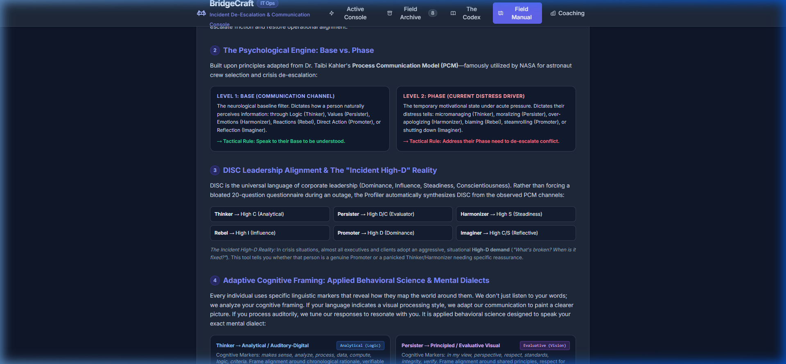
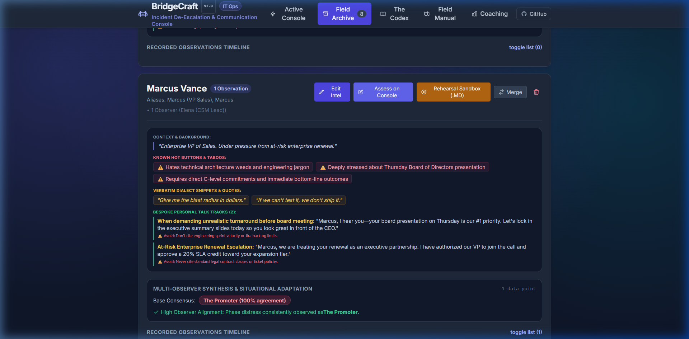
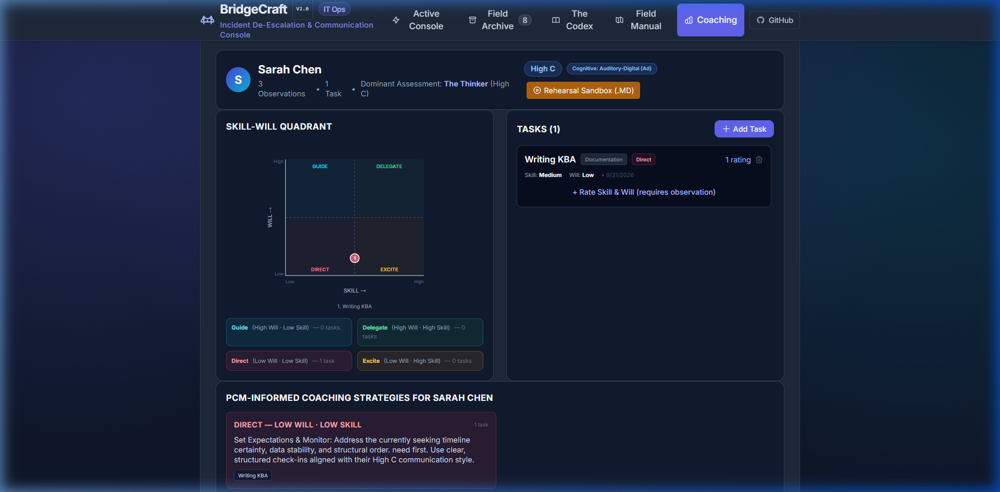

BridgeCraft — Visual UI Tour & Architecture Reference
Comprehensive visual layout and pixel-perfect screenshots of the tactical de-escalation console.
NotebookLM Note: Upload this document as a PDF alongside the Master Guide to Google NotebookLM to anchor slide deck generation, executive briefing decks, and feature walkthrough presentations on verified ground-truth screenshots and exact interface mechanics rather than synthetic approximations.
1. Active Console — Level 2 Diagnostic Probes & Questions
Rendered in under 50ms upon clicking Calibrate Incident Playbook. Features the automatic DISC synthesis badge, psychological diagnosis, tailored "Say This / Never Say This" tactical scripts, and 1-click copyable Slack/Voice status updates.

• DISC Leadership Alignment: High-D / High-C direct synthesis badge.
• De-Escalation Scripts: Proven green-light phrases vs fatal red-light triggers.
• Action Bar:Save to Archive, Export Playbook (.MD), and Edit Battlecard.
3. Adaptive Cognitive Framing — Speaking Their Mental Dialect
Section 4 on the Active Console. Translates behavioral cues into sensory and cognitive processing styles (Visual, Auditory, Kinesthetic, Digital Logic, Evaluative, Velocity). Provides real-time linguistic markers and verbal alignment scripts.

• Linguistic Markers: Detects whether they process in visual imagery, auditory resonance, or action verbs.
• Ethical Standard: Emphasizes operational resonance over interpersonal manipulation.
4. The Field Archive — Stakeholder Dossiers & Rehearsal Sandbox
Persistent multi-observer library tracking individual stakeholders across outage calls and 1-on-1s. Displays consensus channel, situational adaptations, known hot buttons, and the 1-click [🎭 Rehearsal Sandbox (.MD)] export button for external AI roleplay.

• Consensus Engine: 100% Base Consensus across multiple observations.
Longitudinal coaching workspace for engineering managers and incident commanders. Allows teams to log discrete work items, evaluate situational Skill and Will levels, and view them dynamically mapped on an interactive SVG 2x2 matrix (Guide, Delegate, Direct, Excite).

• SVG 2x2 Matrix: Plots tasks as interactive numeric badges in real time.
The bridge between task delegation and psychological calibration. Automatically synthesizes the quadrant leadership stance (Direct, Guide, Excite, Delegate) with the stakeholder's dominant cognitive dialect, generating custom management scripts.